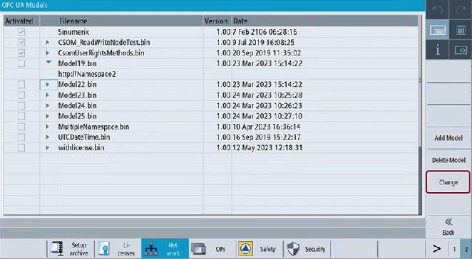

Press the softkey "Change".
Softkey Change
The following screen appears where you can perform the following functions:
Selecting one or multiple CSOM file(s) from the list.
Activating one or multiple CSOM file(s) by selecting the check box.
Deactivating one or multiple CSOM file(s) by clearing the check box.
OPC UA Models Select
Pressing the softkey "Cancel" will do no action and return to "OPC UA Models" screen.
Pressing the softkey "OK" will apply the changes.
The conditons for activating the CSOM files are described in the following table:
Condition | Description |
|---|---|
Activating multiple CSOM files with same namespace | Activating multiple binary files is not possible for CSOM files which have same namespace URI, A popup message displays "Selected model file contains the same Namespace URI as in <filename.bin>. By clicking "OK", the currently activated file will be deactivated. |
Namespace count limit reached | Maximum number of namespaces that can be activated cannot exceed 12. |
Max. bin files that can be activated | Maximum number of CSOM files that can be activated is 10. |
Max. bin files that can be loaded | Maximum number of CSOM files that can be loaded is 25. |
Activating with namespace URI | With new installations of OPC UA server version 4.1, only access rights with namespace URI is allowed. |
| Note |
Namespaces can be viewed as mentioned below:
|
When a binary file created in OPC UA version <= 4.0 is loaded in OPC UA version 4.1, the following is the behavior they exhibit:
The namespace indexing works only if one CSOM file is activated. User can apply CsomReadx and CsomWritex rights, whereas "x" stands for the namespace index number (3-12).
The access rights changes from Namespace index to Namespace URI when any of the following operations are performed:
If you remove the user access by invoking DeleteUserAccess method, then CsomReadx and CsomWritex access rights are removed.
When you activate two or more CSOM files, the existing CsomReadx and CsomWritex rights are deleted. After the server restart, access rights can be given/deleted only with Namespace URI.